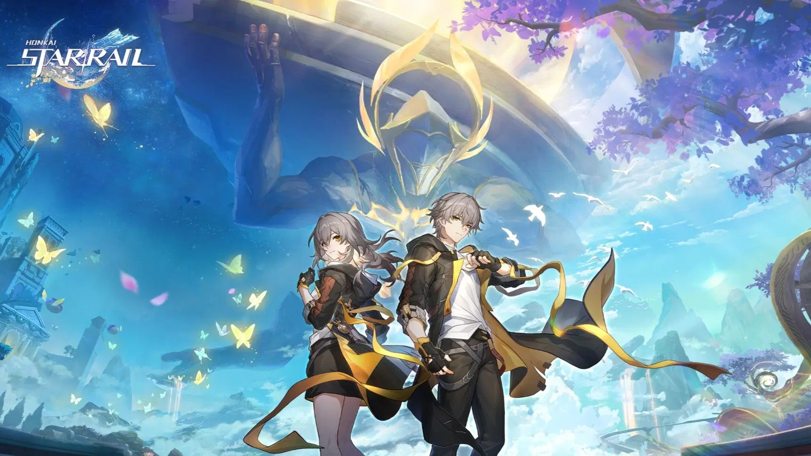
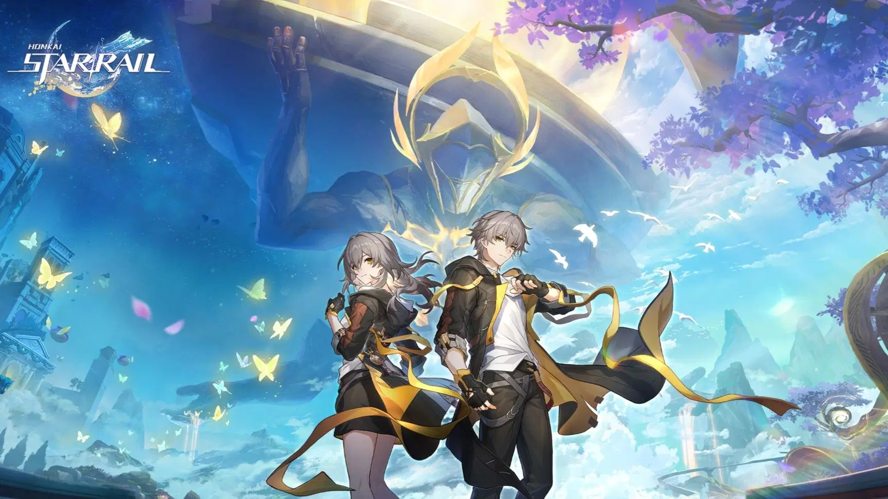

Calvin Teo Yee Jie
Nice to meet you!
Aloha, I am a software engineering student OwO
My Story
I didn’t start my career in the tech world—I came from the fast-paced environment of the food and beverage industry.
But during my work, I had the chance to interact with programming, and something clicked.
I found myself genuinely fascinated by how technology solves problems and creates new possibilities.
Compared to many people in the field, I started my IT journey a little later.
But I’ve always believed that it’s never too late to start learning. With that mindset,
I decided to return to school and fully commit to building a new path in technology.
Today, I’m focused on growing my skills, embracing challenges, and continuously learning.
My journey may have taken an unexpected turn, but I don’t regret who I was or who I am today,
or the choices I’ve made along the way.
I also continue exploring culinary art when I feel stressed, as cooking has always been a therapeutic outlet for me.
I feel happy when I see others enjoying the food I prepare.
Education & Experience
Southern University College
Bachelor of Software Engineering
- Vice President of Department of Computer Science(DCS)
- Vice President of Southern E-Sport Club(SEC)
- Dean's List for academic excellence
Foon Yew High School (Kulai)
Studied in Culinary Art
- Chairman of The Learning Achievements Dinner 2018
- Silver place in Cooking Competition
- Teacher's Day Celebration Cake in 2016 & 2018
Skills & Expertise
Interests & Hobbies
Cooking
Cook for my beloved family and friends.

 

Gaming
Enjoy playing games with friends.
Travel
Explore new places and cultures.


Music
Listen to various genres of music to relax.